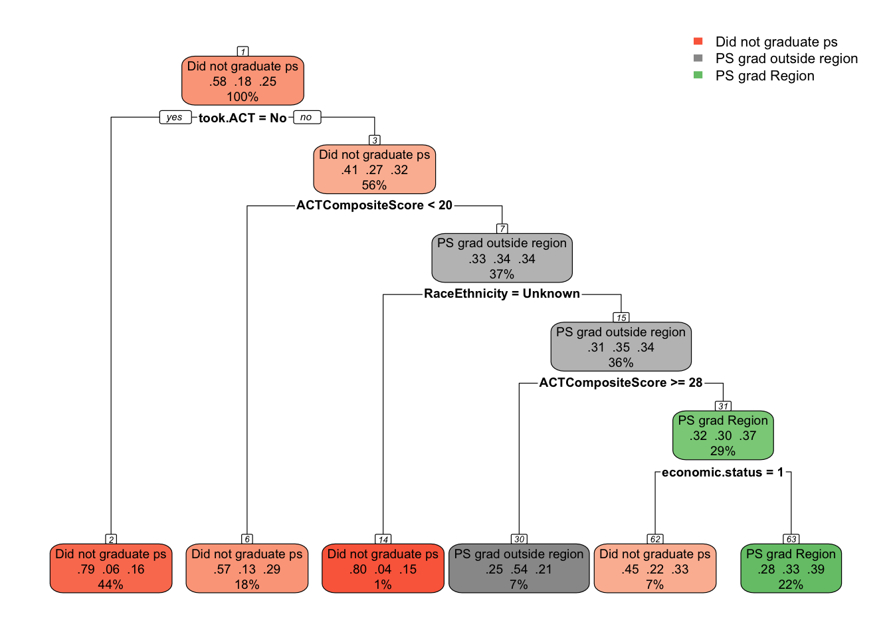
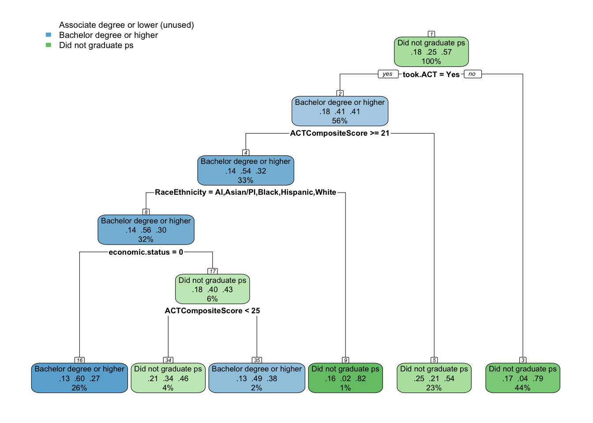

In the previous analyses, post-secondary variables rose to the top again and again as a primary factor in whether an individual had meaningful employment in the region or not. In particular, these two variables were the highest and broke in the following ways;
Graduation location consistently mattered. Those who graduated from a postsecondary institution within their high school region had the strongest likelihood of achieving local meaningful employment. Graduates from institutions elsewhere in Minnesota also did relatively well, though not as strongly as regional graduates. Outcomes were weaker for those who graduated from institutions outside of Minnesota, and the weakest outcomes were for those who did not graduate from any postsecondary institution. This suggests that proximity and local institutional ties play a key role in anchoring graduates in the regional labor market.
Highest Credential Earned (`highest.cred.level`)
Higher credentials were associated with greater mobility out of the region. Bachelor’s and advanced degree holders were less likely to be employed locally compared to those with associate’s degrees or certificates, as higher levels of education often connect individuals to broader labor markets. Conversely, individuals with certificates or associate’s degrees had a stronger tendency to remain employed within the region. Those who did not complete a credential had weaker outcomes overall, but among the employed, they were more likely than bachelor’s recipients to stay in local, lower-skill jobs.
For both of these variables, we will combine classifications in order to have a smaller set to model against;
ps.grad.location
PS grad region
PS grad outside region: includes all individuals that graduated from college outside of the region and state.
Did not graduate ps
highest.cred.level
Associate degree or lower
Bachelors or higher
Did not graduate: includes individuals with some college and no college experience.
master <- master.original %>%mutate(ps.grad.location.new =ifelse(ps.grad.location %in%c("PS grad MN", "PS grad outside MN"), "PS grad outside region", as.character(ps.grad.location)),highest.cred.level.new =ifelse(highest.cred.level %in%c("Associate degree", "Less than Associate Degree"), "Associate degree or lower", as.character(highest.cred.level)),highest.cred.level.new =ifelse(highest.cred.level.new %in%c("No college", "Some college"), "Did not graduate ps", as.character(highest.cred.level.new)))kable(names(master))
This study investigates the factors that influence what secondary education pathway a high school graduate follows. To isolate and understand the predictors of this specific outcome, the analysis compares it separately against three alternative post-secondary variables:
Post-secondary graduation location
Highest Credential Earned in Post-secondary
Graduates classified as Attending post-secondary for either of these are excluded from the analysis.
The modeling process follows these steps:
Data Preparation All predictor variables include demographic characteristics, high school characteristics, and high school achievement indicators. Records with missing target outcome categories are excluded.
Training and Test Split For each post-secondary variable, the data is randomly split into a training set (70–80%) and a testing set (20–30%) to ensure that model evaluation is conducted on previously unseen data.
Modeling
We are going to use the following method to each comparison:
CART (Classification and Regression Tree) for interpretability and identification of clear decision rules. We will start by developing the base model, and then do pre- and post-pruning to determine which model provides the best accuracy.
Evaluation Models are evaluated on the testing set using accuracy, Cohen’s kappa, balanced accuracy, sensitivity, and specificity. Variable importance is examined to identify the most influential predictors for each comparison and time point.
This approach emphasizes clarity in interpretation by focusing each mode three post-secondary distinctions, making it easier to identify which factors most strongly differentiate graduates who follow pathways that lead to secondary pathways that benefit regional workforce employment.
The table below shows that 58% of the individuals did not graduate college, 18% graduated outside their high school region, and 25% graduated from a college within their region.
ps.grad.location <- data %>%select(-highest.cred.level.new) %>%filter(ps.grad.location.new !="Attending ps") %>%mutate(ps.grad.location.new =as.factor(ps.grad.location.new))comma(nrow(ps.grad.location))
I know the base model is going to overfit and provide an overly complex tree due to having a cost penalty of 0. So I’m just going to print the complexity plot in order to see what the appropriate CP would be to minimize xerror.
Next, we need to prune. We can either pre-prune or post-prune. We will start with pre-pruning and use each method - max depth, min depth, and min bucket. It’s recommended that I start with the following parameters;
The post-pruned model provides a much simpler model - 5 splits instead of pre-pruned’s 10 splits - while also giving about the same accuracy. I will dive into that one below.
#Plot treerpart.plot(ps.grad.location.model.postprune, nn =TRUE)

Main takeaway
Model Performance
The post-pruned tree achieved 61.5% accuracy with a root node error of 42.5%. While not extremely high, this accuracy reflects a meaningful improvement over baseline and demonstrates that a small set of predictors can capture important patterns in postsecondary graduation location.
Key Predictors
The most influential predictors retained after pruning were:
ACT Composite Score
Economic Status
Race/Ethnicity
Took ACT
Interpretation of Tree Structure
Graduation from a regional postsecondary institution was most strongly linked with higher ACT scores (≥28). Students demonstrating strong academic preparation were more likely to complete a credential in their home region. This pattern was especially pronounced among those from economically disadvantaged backgrounds, suggesting that high-achieving, low-income students often pursued regional options rather than leaving the area.
By contrast, students with low ACT scores (<20) or who did not take the ACT were much more likely to not graduate at all. Students with mid-range ACT performance and less clear demographic ties (e.g., race/ethnicity unknown) were more likely to graduate outside the region.
Summary
The CART model indicates that high academic readiness is the strongest pathway into regional postsecondary graduation, particularly when paired with economic disadvantage. In other words, the students most anchored to regional institutions were those who combined strong academic performance with fewer economic resources. This suggests that regional colleges play an especially important role in providing access and opportunity for capable but economically constrained students, while lower academic readiness often foreclosed postsecondary completion altogether.
Analysis - Highest Credential Earned
The table below shows that 58% of the individuals did not graduate college, 24% graduated with a Bachelor degree or higher, and 18% graduated with an Associate degree or lower.
highest.cred.level <- data %>%select(-ps.grad.location.new) %>%filter(highest.cred.level.new !="Attending ps") %>%mutate(highest.cred.level.new =as.factor(highest.cred.level.new))comma(nrow(highest.cred.level))
I know the base model is going to overfit and provide an overly complex tree due to having a cost penalty of 0. So I’m just going to print the complexity plot in order to see what the appropriate CP would be to minimize xerror.
Next, we need to prune. We can either pre-prune or post-prune. We will start with pre-pruning and use each method - max depth, min depth, and min bucket. It’s recommended that I start with the following parameters;
The pre-pruned model is the same as the post-prune model and provides a simple, 5 split tree. I will dive into that one below.
#Plot treerpart.plot(highest.cred.level.model.preprune, nn =TRUE)

Main takeaway
Model Performance
The pre-pruned CART model achieved an accuracy of 65.9%, with a root node error of 42.5%. This represents a solid improvement over baseline and indicates that a small set of academic and demographic factors predict credential attainment reasonably well.
Key Predictors
The most influential predictors retained were:
ACT Composite Score
Economic Status
Race/Ethnicity
Took ACT
Interpretation of Tree Structure
Completion of a bachelor’s degree or higher was most strongly linked to taking the ACT and achieving a score of at least 21. Students from across racial/ethnic groups with higher ACT scores, particularly those without economic disadvantage, were the most likely to attain these higher-level credentials.
Students with low ACT scores (<21), or who did not take the ACT at all, were most likely to not graduate postsecondary. Economic status compounded this effect, with disadvantaged students at greater risk of non-completion even when they had moderate ACT scores.
Although the tree did not form a distinct pathway that isolated associate degrees or lower, these outcomes generally clustered among students with mid-range ACT scores (21–24). Within this range, students with some academic preparation but lower overall scores were less competitive for bachelor’s pathways but still positioned to complete sub-baccalaureate programs. Economic disadvantage increased the likelihood of falling short of a bachelor’s degree, which in many cases meant completing an associate degree or certificate instead of leaving without any credential.
Summary
The CART model highlights three general pathways:
Strong ACT performance (≥21), no economic disadvantage → bachelor’s degree or higher
Mid-range ACT performance, especially with disadvantage → associate degree or lower
Low or no ACT performance (<21 or no test) → non-completion
In other words, sub-baccalaureate completion emerges as a “middle pathway,” tied to moderate academic readiness and shaped by socioeconomic constraints. Students without strong academic signals often fail to complete, while those with higher scores move into bachelor’s attainment. The associate/certificate route, while less cleanly predicted in the tree, reflects a mix of opportunity and constraint: it anchors students with some preparation, but often limited resources, into shorter credentials that still provide local labor market value.
Comparison
Comparison of Postsecondary Graduation Location and Highest Credential Earned
Both postsecondary graduation location and highest credential earned emerged as powerful predictors of meaningful employment, but they influenced outcomes in different ways.
Graduation location primarily reflected where students were most likely to remain employed. The CART analysis showed that students who graduated from a regional institution were the most likely to secure meaningful local employment, demonstrating the strong anchoring effect of nearby colleges. By contrast, students graduating outside the region, especially outside Minnesota, were less likely to stay in the regional labor market. Academic readiness, particularly higher ACT scores, increased the likelihood of completing a regional credential, with disadvantaged students who scored well on the ACT especially anchored to local institutions.
Highest credential earned, on the other hand, shaped how far students’ employment opportunities extended. Students who attained a bachelor’s degree or higher were less likely to remain employed locally, as these credentials opened access to broader state and national labor markets. In contrast, students with associate degrees or lower were more likely to stay in regional employment, reflecting a closer alignment between sub-baccalaureate training and local job structures. Non-completers were at the highest risk of poor employment outcomes altogether, with many remaining in the region but in lower-skill, less stable jobs.
Summary and Policy Implications
Together, the two models highlight a complementary dynamic: graduation location determines whether students stay rooted in the region, while credential level determines whether they pursue local opportunities or broader labor markets. Regional institutions play a critical role in anchoring students, particularly those from disadvantaged backgrounds with strong academic preparation, while credential level shapes the degree of geographic mobility.
For policy and planning, this suggests two priorities. First, strengthening regional postsecondary institutions can enhance local workforce retention, especially by supporting high-achieving but economically constrained students who might otherwise leave. Second, expanding opportunities for sub-baccalaureate credentials can help align education with regional labor market needs, while creating clearer pathways for bachelor’s graduates to find meaningful employment locally may help reduce outmigration. In short, location ties students to place, while credential level influences the reach of their opportunities—a balance that policymakers and institutions can shape through program design and workforce partnerships.